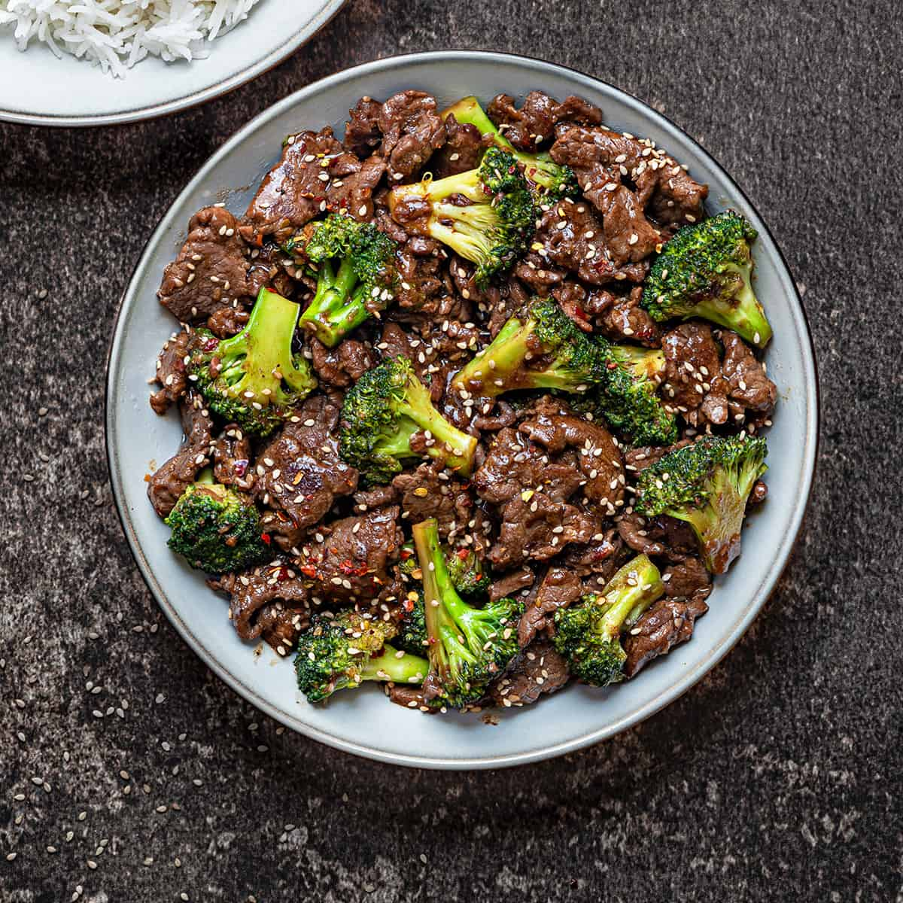

A quintessential Chinese-American dish, beef and broccoli is a classic that graces the menu at almost every takeout spot across the country. In terms of popularity, it's right up there with orange chicken, and for very good reason: The combination of tender, seared beef and broccoli tossed in a garlicky, velvety sauce is practically impossible to resist.
Meal prep time : 40 minutes
Servings : 6